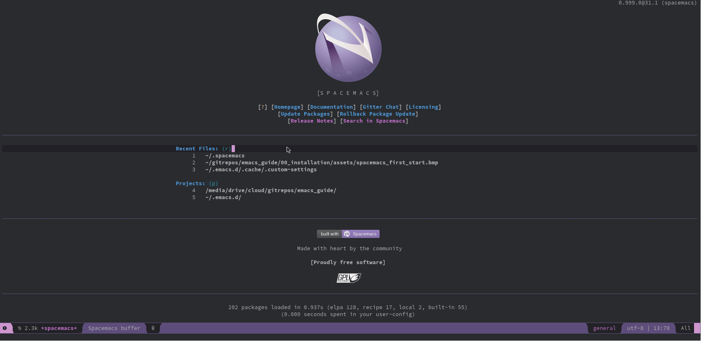
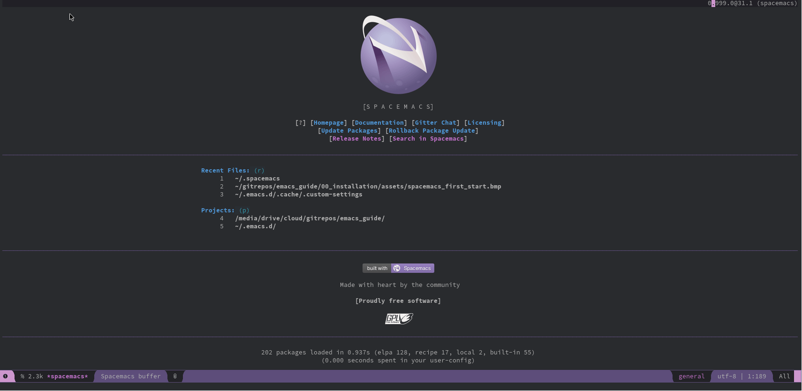
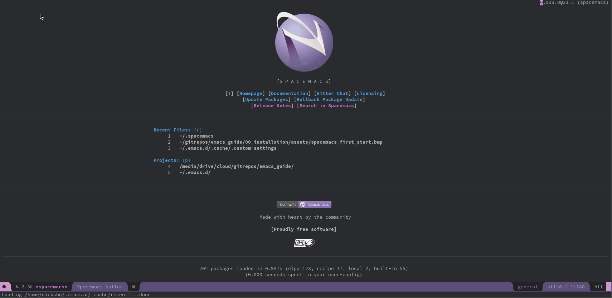
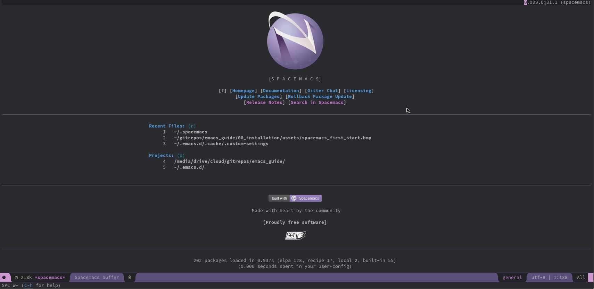
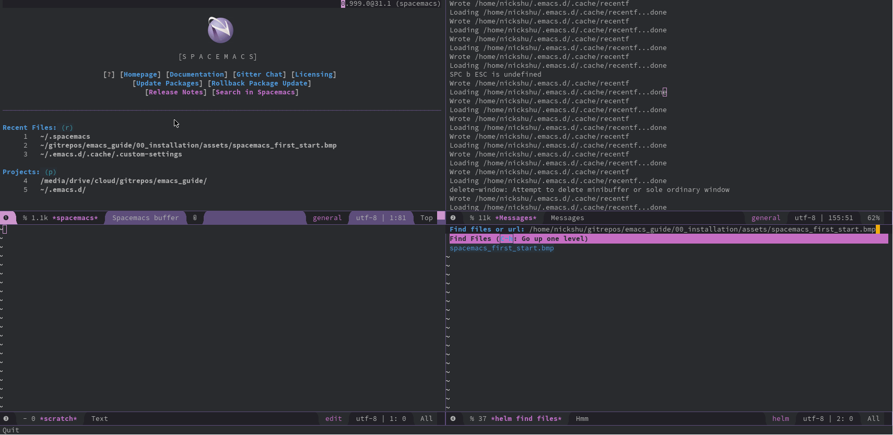
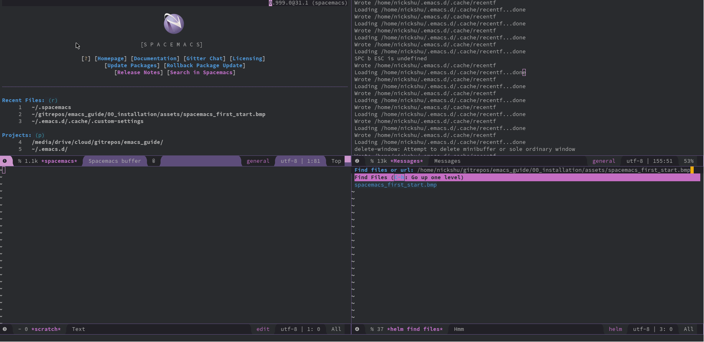
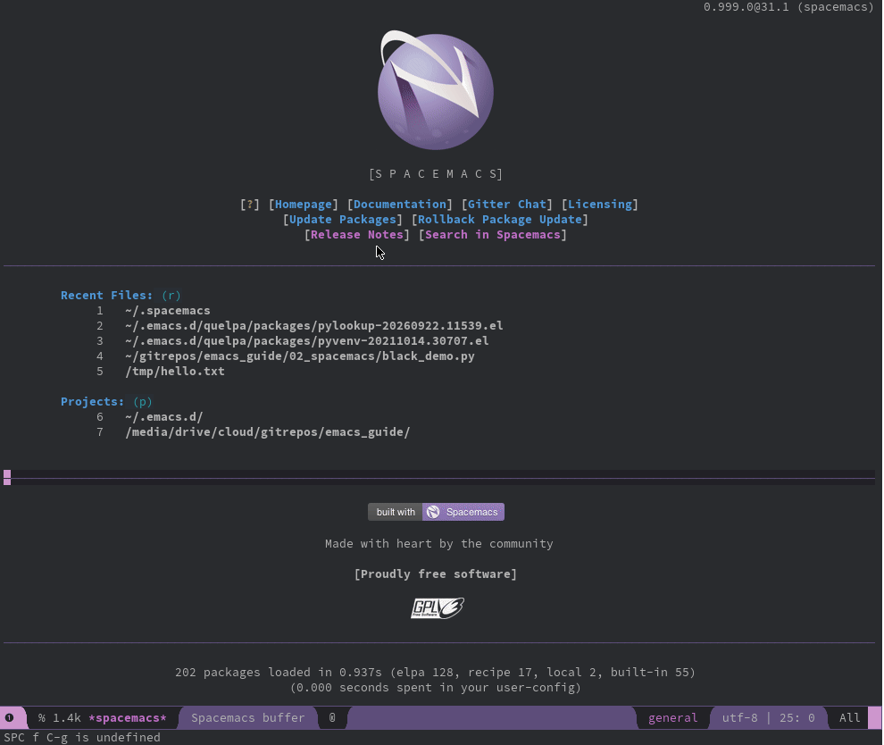
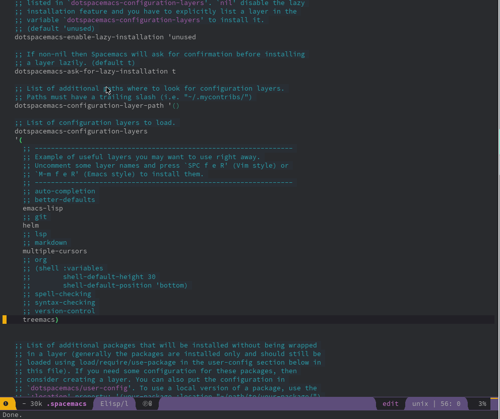
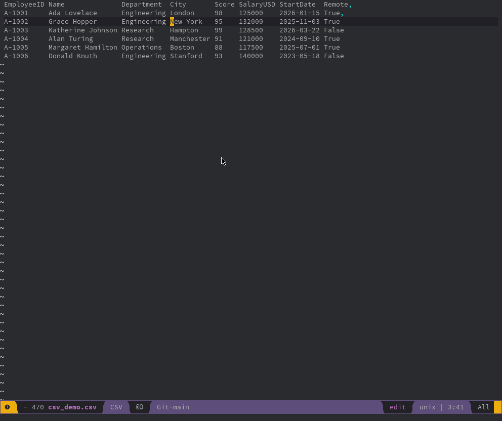
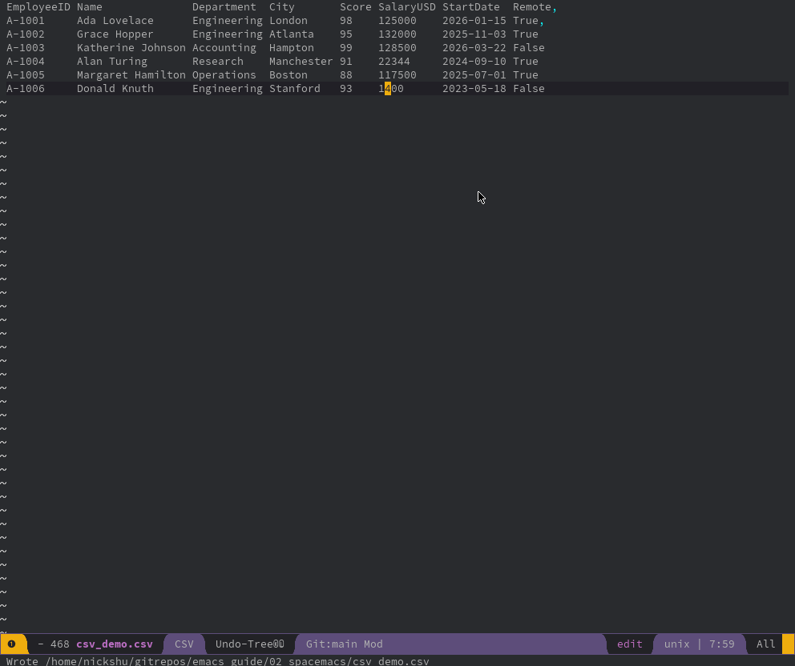

Emacs Guide
Nick Shu
Created: 2026-09-22 Tue 05:01
Emacs
Intro
Basics
Vocabulary
C: Control- E.g.
C-x C-emeansCtrl+X (then) Ctrl+E
- E.g.
M: Meta key, usuallyAlt- E.g.
M-:meansAlt+Shift+;
- E.g.
- Evaluate an expression:
M-: - Running a command:
M-x
Windows and Buffers
A window is a visual interface that displays different types of buffers. These can be split between different files.

Split window vertical
split-window-rightSPC w v(Spacemacs)SPC w v(Doom)

Split window horizontal
split-window-belowSPC w s(Spacemacs)SPC w s(Doom)

Split window in 4 grid
window-split-gridSPC w 4(Spacemacs)

Resize your window
shrink-window-horizontallySPC w [(Spacemacs)C-x {(Vanilla / Doom)enlarge-window-horizontallySPC w ](Spacemacs)C-x }(Vanilla / Doom)

Swapping Windows
winum-select-window-{number}(e.g.winum-select-window-4)SPC {number}/M-{number}(e.g.SPC 4orM-4) (Spacemacs)M-m {number}(e.g.M-m 4) (Vanilla)

Create a new file
find-fileSPC f f(Spacemacs)C-x C-f(Vanilla)
Save Files
save-bufferSPC f sC-x C-s(Vanilla):w(using Evil)
Package Management
You may install packages on Emacs, which may vary on the flavor of Emacs.
- Vanilla Emacs utilizes the
~/.emacs.d/init.el - Spacemacs is configured in
~/.spacemacs - Doom Emacs is configured in 3 locations
Python Black

CSV Modes

Text Editor
Treemacs

Undo Tree

Dired
Dired is a very powerful file manager

Dired edits a buffer